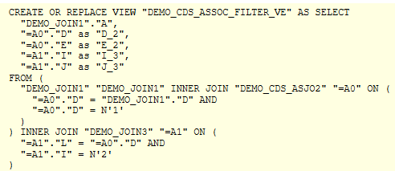

AS ABAP Release 755, ©Copyright 2026 SAP SE. All rights reserved.
ABAP - Keyword Documentation → ABAP - Core Data Services (ABAP CDS) → ABAP CDS - Data Definitions → ABAP CDS - DDL for Data Definitions → ABAP CDS - CDS Entities → ABAP CDS - View Entities → CDS DDL - DEFINE VIEW ENTITY → CDS DDL - CDS View Entity, SELECT → CDS DDL - SELECT, CDS View Entity, Operands and Expressions → CDS DDL - CDS View Entity, path_expr → CDS DDL - CDS View Entity, path_expr, attributes →CDS DDL - CDS View Entity, path_expr, filter
Syntax
... [WHERE] cds_cond ...
Effect
Filter condition for the current CDS association. If the join type is explicitly defined with INNER|{LEFT OUTER}, the addition WHERE must be specified explicitly. If this is not the case, WHERE must not be specified.
A filter condition is a condition cds_cond implemented as an expanded condition for the join when transforming the CDS association into a join.
For the operands of the filter condition of a path expression of a CDS view entity, the following rules apply:
If no filter condition is specified in the path expression, any default filter condition specified for the CDS association is used.
Hint
In CDS view entities, the filter conditions of multiple CDS associations are by default compared semantically. If the filter conditions match, the associated join expression is created only once. This generally improves performance.
Example
The following CDS view entity contains path expressions with filter conditions in its SELECT list that are implemented as join expressions upon activation.
The following image shows the joins created on the database:
